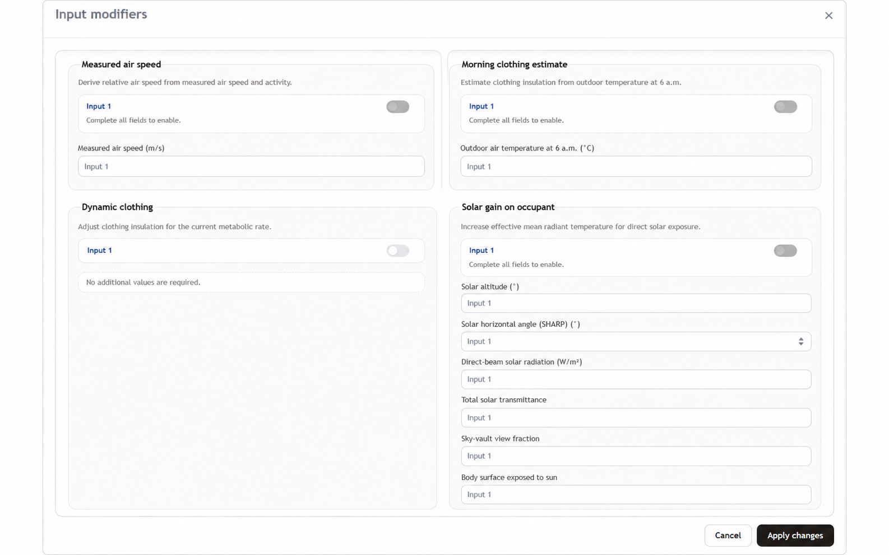
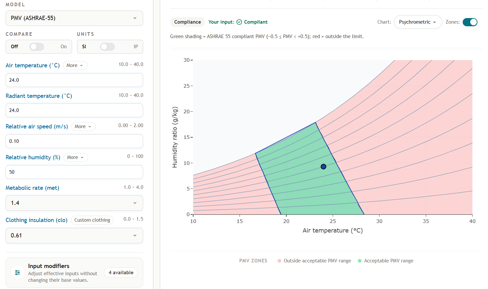
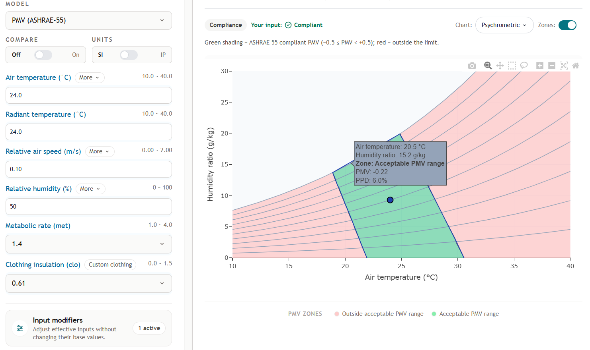

Input modifiers
Overview
An input modifier computes one of a model's inputs from something easier to measure. It never adds an input to the model and never changes the model's equations it changes the number that goes in.
The previous documentation described these as four unrelated "additional features". They are now one mechanism with four entries, switched on and configured together from a single editor in the input panel.

Primary interface components
The adjustments button at the top of the input fields opens the editor. Inside it each modifier has a toggle and, where it needs values of its own, a set of fields that appear when it is switched on. Changes are applied together when you confirm, and discarded if you close the editor without applying.
Base input values remain visible in the input panel. When a modifier is enabled, the tool keeps those base values unchanged and uses the modifier-derived effective value for the calculation. The Input modifiers control shows how many modifiers are active.
The four modifiers
Measured air speed. Derives relative air speed from a measured still-air value and the metabolic rate, accounting for the air the occupant stirs up by moving. Use it when your measurement came from an anemometer in a still room rather than from a person in motion. Accepts a measured air speed from 0 to 2 m/s.
Morning clothing estimate. Predicts clothing insulation from the outdoor temperature at 6 a.m., on the observation that people dress for the morning and rarely change during the day. Use it when modelling a population rather than a known ensemble. Accepts an outdoor temperature from −50 to 50 °C.
Dynamic clothing. Adjusts the clothing insulation you entered for the current metabolic rate, since movement pumps air through clothing and reduces its effective resistance. It needs no values of its own. The previous version of this tool applied this correction automatically in the background; in this version it is applied only when the modifier is switched on.
Solar gain on occupant. Converts direct solar exposure into an increase in mean radiant temperature and adds it to the value you entered. This is the largest of the four in effect, and the one with the most inputs an occupant beside a sunlit window can be several degrees warmer than the room's mean radiant temperature suggests. It takes:
| Input | Accepted range |
|---|---|
| Solar altitude | 0 to 90° |
| Solar horizontal angle relative to the occupant | 0 to 180° |
| Direct solar radiation | 200 to 1000 W/m² |
| Solar transmittance of the glazing | 0 to 1 |
| Sky vault view fraction | 0 to 1 |
| Fraction of the body exposed to sun | 0 to 1 |
documentation/solar-gain page: solar gain is now one
of four modifiers rather than a feature of its own, and that URL redirects here.Which models offer them
| Model | Modifiers |
|---|---|
| PMV / PPD (ASHRAE 55) | All four |
| PMV / PPD (ISO 7730) | All four |
| Every other model | None the adjustments button does not appear |
Modifiers are declared per model, so Adaptive, PHS, UTCI, Heat Index, Humidex and Wind Chill offer none. They are available on the PMV models wherever those models are reachable: on their compliance workspaces and in Explore alike.
How they combine
Enabled modifiers are applied in a fixed order measured air speed, morning clothing estimate, dynamic clothing, solar gain and each one sees the values the previous ones produced.
That ordering matters in one case. Morning clothing estimate produces a clothing value, and dynamic clothing then adjusts that value rather than the one you typed. Enabling both is therefore a chain, not two independent corrections.
A modifier takes effect only once all of its own fields hold values inside their accepted ranges; an incomplete modifier is not applied.


Where to go next
- PMV (ASHRAE 55) where each modified input fits into the model.
- ASHRAE 55 the workspace these are configured from.